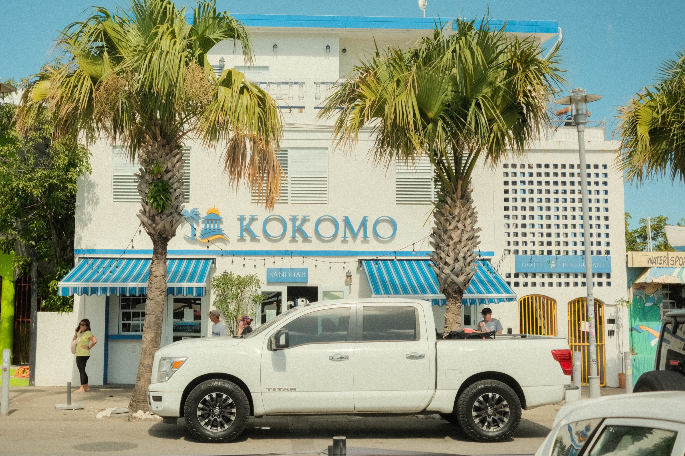
Places render differently through film. The light holds differently. These photographs are about being somewhere fully, present enough to notice the way light falls on a wall, on water, on a face you do not know.
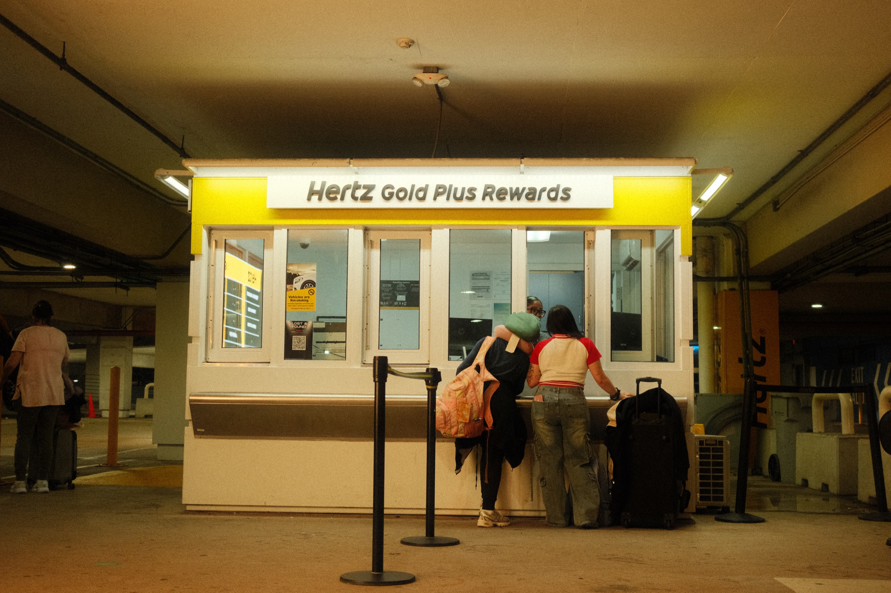
2025
Travel photography asks you to pay attention before you understand what you are looking at. You arrive somewhere and nothing is familiar yet, which is exactly when you see most clearly. The eye is still awake. Nothing has become ordinary.
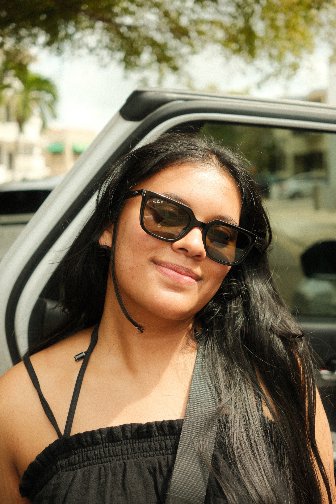
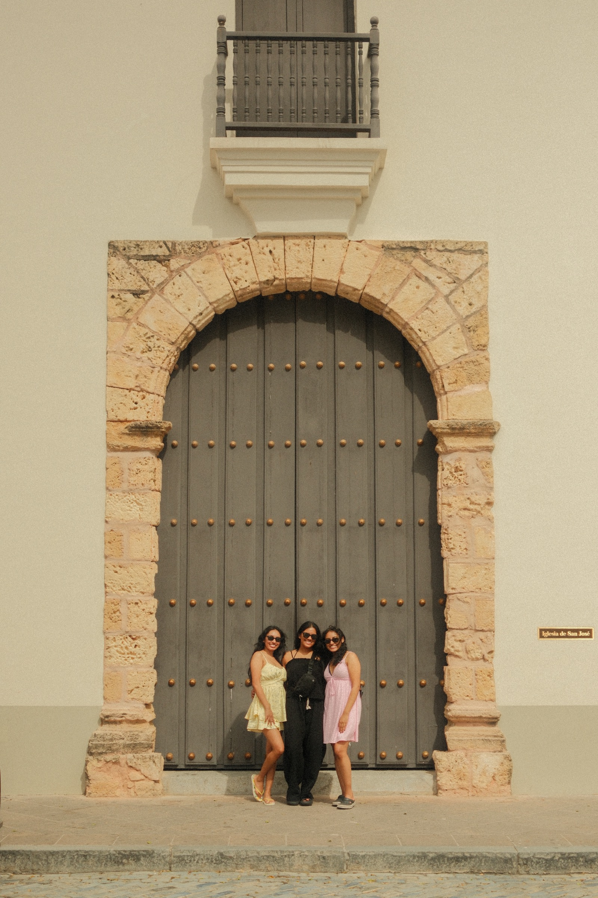
I find myself drawn to the quiet moments between the obvious ones. The alley rather than the square. The empty hour of the afternoon when the light is doing something interesting and no one else is awake to notice it.

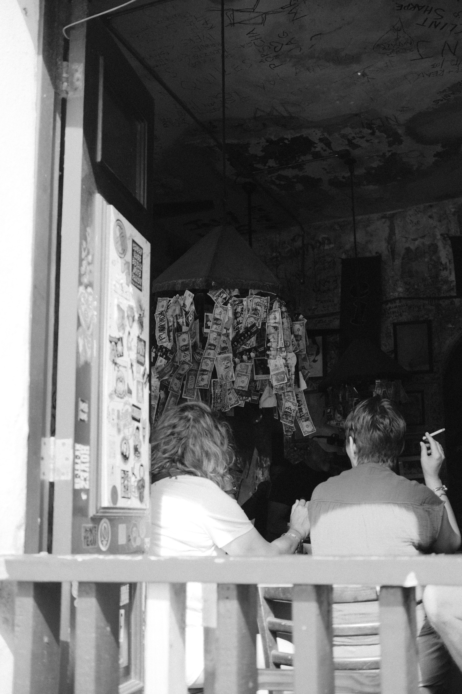
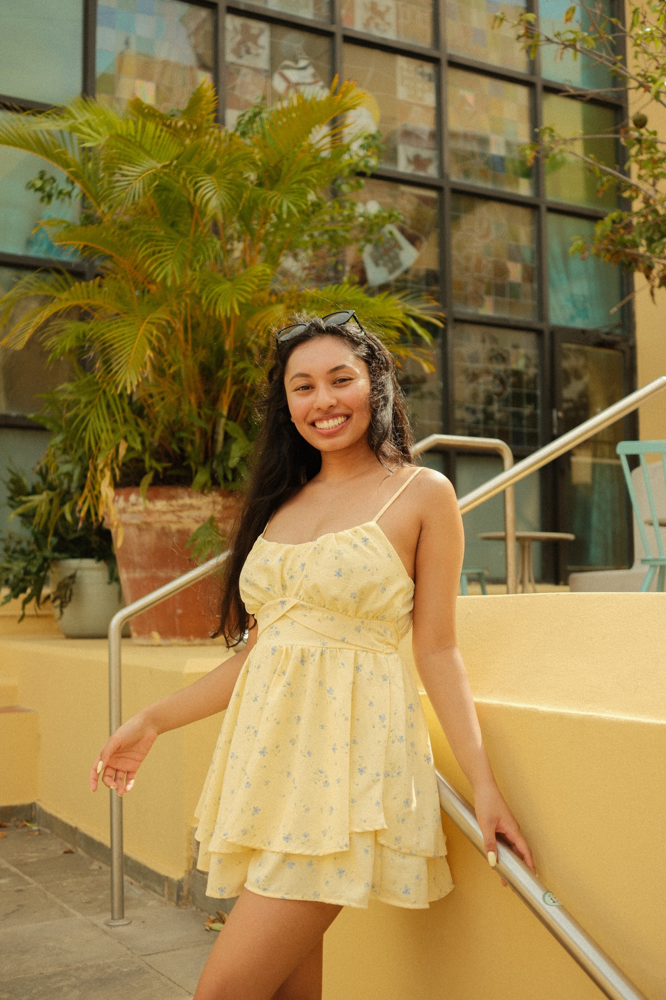
Film is patient. It does not encourage you to take fifty frames of the same thing. You decide, you commit, and then you wait to see what you chose. That restraint changes how you move through a place.
You stop more. You look longer before raising the camera.
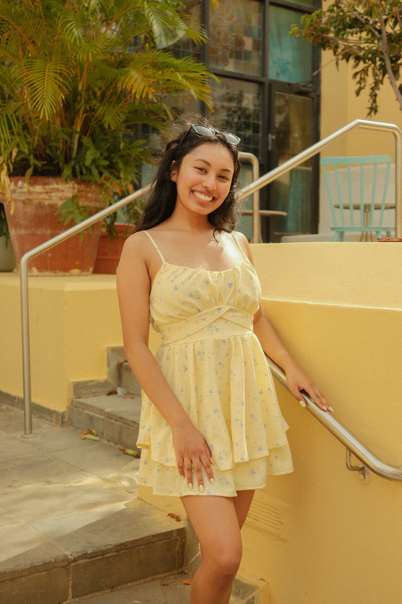
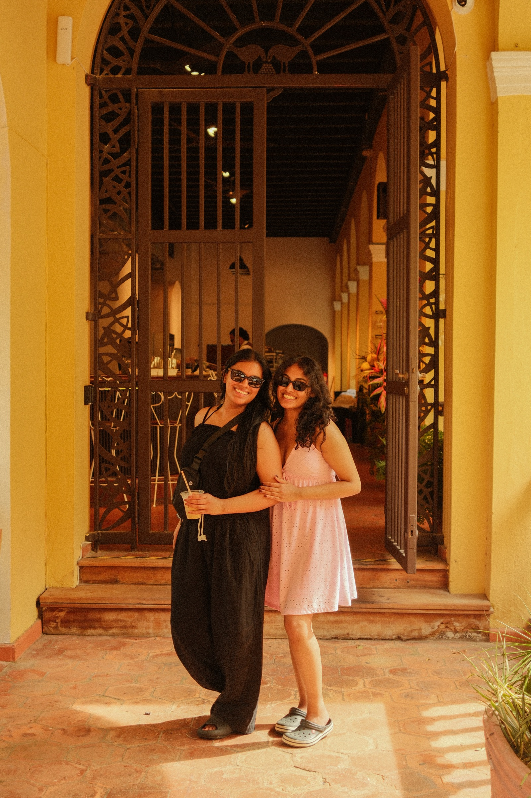
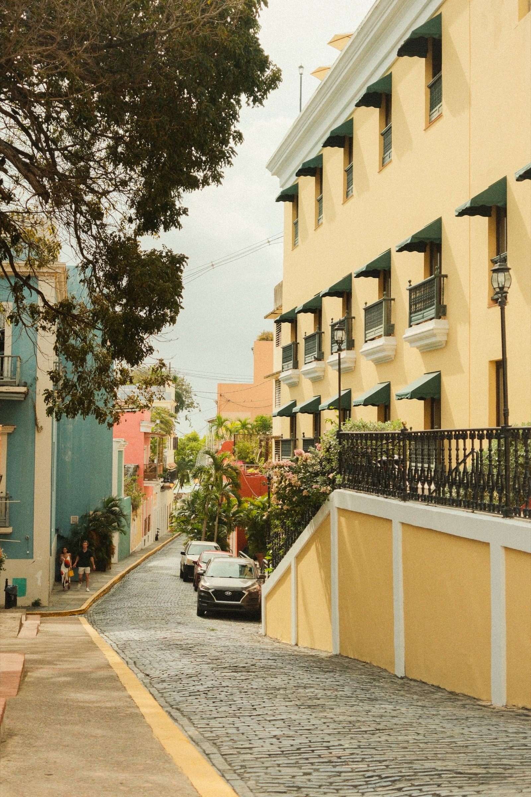
2025
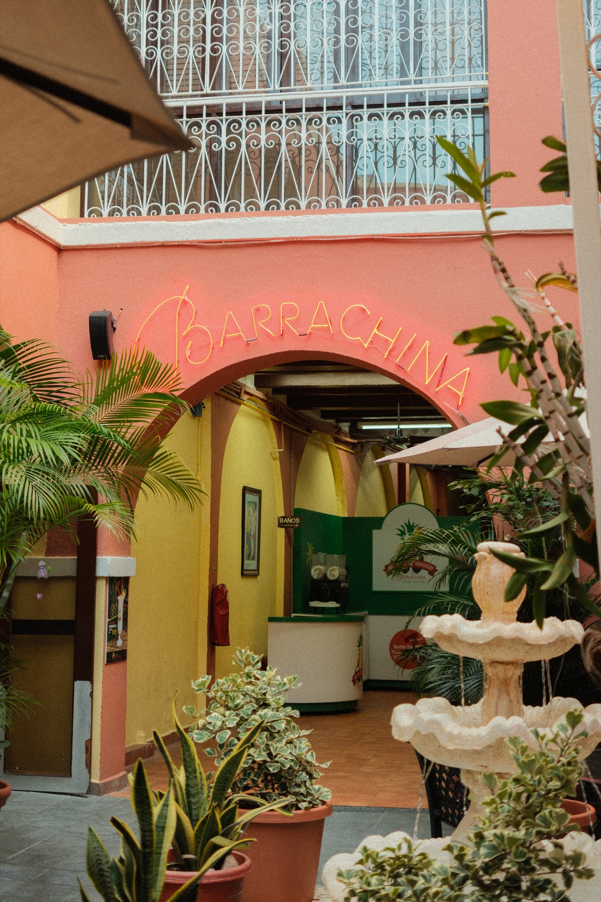
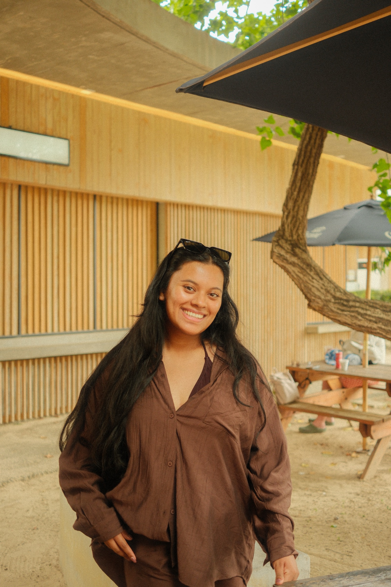
Every place has its particular quality of light. The way it angles through windows in the morning. The color it turns at the end of the day. Once you start paying attention to that, you stop being able to stop.
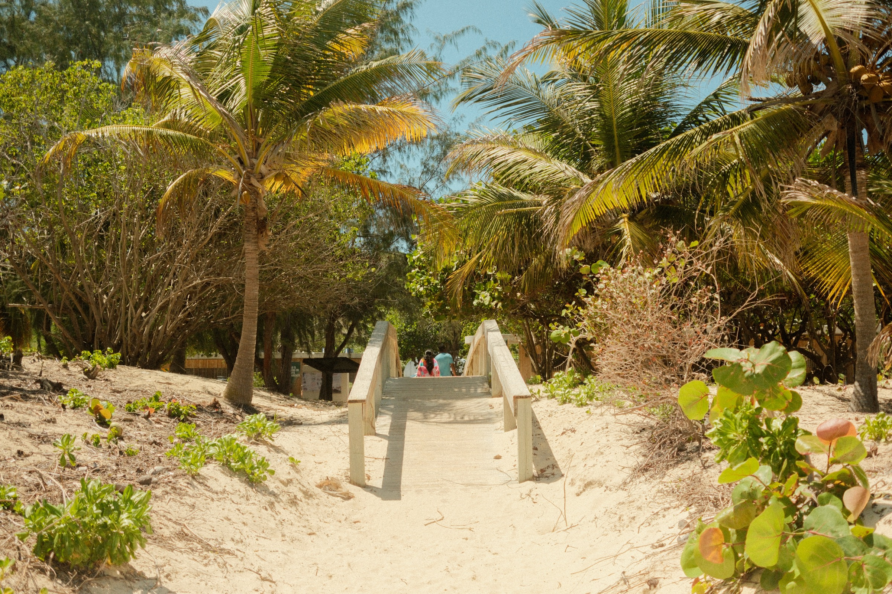

You leave a place and the images you carry are not always the ones you expected. Not the landmark or the famous view, but the small ordinary thing that happened to be in good light. That is what travel photography gives you when it goes well: evidence of what you noticed.